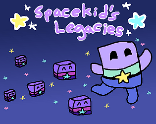

Bones and Marrow: Infested
A 2D retro, arcade, platformer with rouge-like elements.
Spacekid's Legacies
A 2D Puzzle Platformer where you leave behind platforms to reach the goal.

Five Nights at Fluffball's
A FNAF fan game made in Nintedo’s Game Builder Garage.